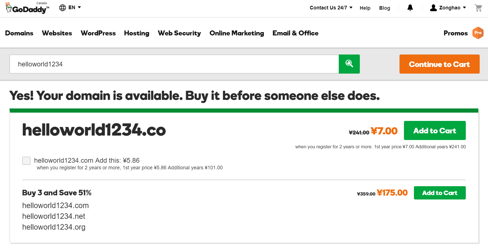

Creating and hosting my own small website is on my to-do list for really a while, which I did not manage to get it started until the
end of 2017, due to my terrible time management (I guess...) and my life-long unforgetable Christmas holiday (I need to find something
to do to distract my mind from breaking down with my grilfriend after the 5-year long-distance relationship). Surely, there are countless tutorials
about building-up your own website from scratch, some of them can be a bit of time-consuming, some of them are just purely over-simplified, or some of them just
do not work... I knew using Github Pages to host personal website and I did found it was extremely efficient, simple, and straightforward.
I will say if you are NOT a serious website designer/architect, and if are someone like me who just would like to have a personal website
for fun without investing too much time and money on it, this guide might be helpful to you. There are also many other Github Pages
tutorials available on Google, I write this guide is also for my own track, so I will appriciate if you have any suggestions
and feedbacks, and please you are welcome to contact me (see About in the navigation bar for the methods to be in touch with me).
As this guide is based on Github Pages, you should first have a Github account. Skip this step if you have one.
If you have your Github account, you can then refer to the offical guide of the Github Pages on how to
construct your first Hello World website (click here for the brief tutorial).
It is possible (you might spend money for your site on elsewhere which I am not sure...) for you to have a totally free personal website
if you do NOT want to have a custom domain; your default site domian should be username.github.io. If you do
not like it and would like to have your own custom domain, it means you need to buy your own custom domain. You can skip the next step if you do NOT want to do so.
Skip this step if you do NOT want to buy your own custom domain. There are many places to buy domains,
the one I bought was from GoDaddy. Again, you need to have an account before any shopping... Once you do
so, you can search your desired domain name to see if it is still available. I will generally suggest to use your name as your domain name for your own site, just easier
for people to memorize. The following picture is just an example of using helloworld1234 for the domain name registration search.

GoDaddy Custom Domain Registration
Once you have your custom domain register, you need to do some configurations in order to activate it.